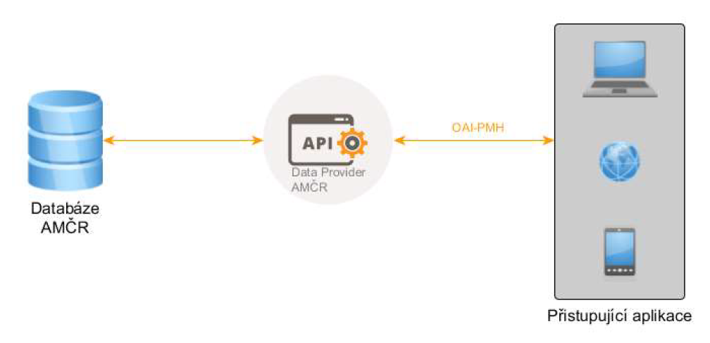
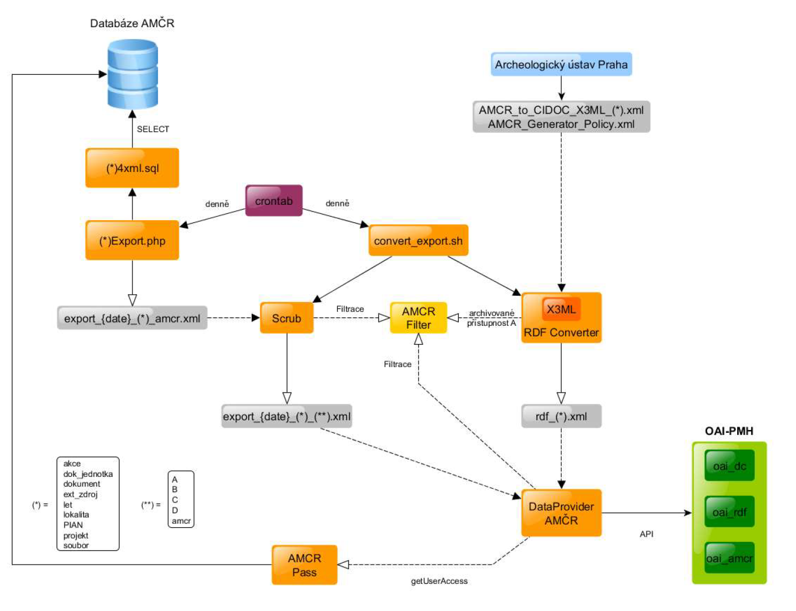
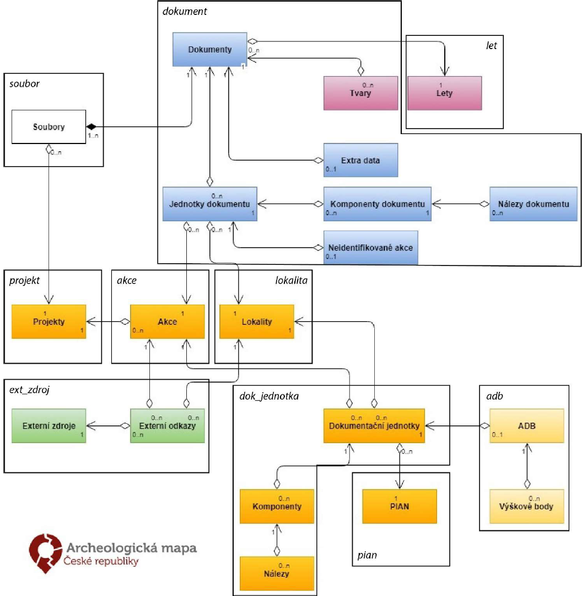
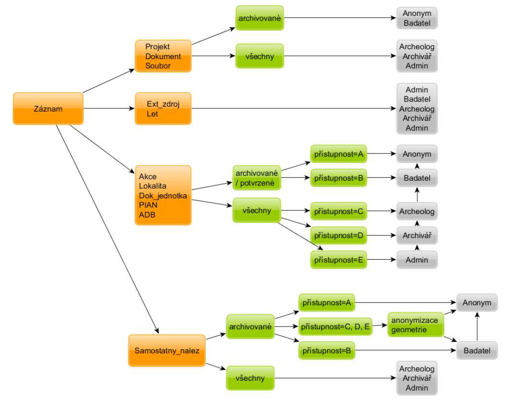
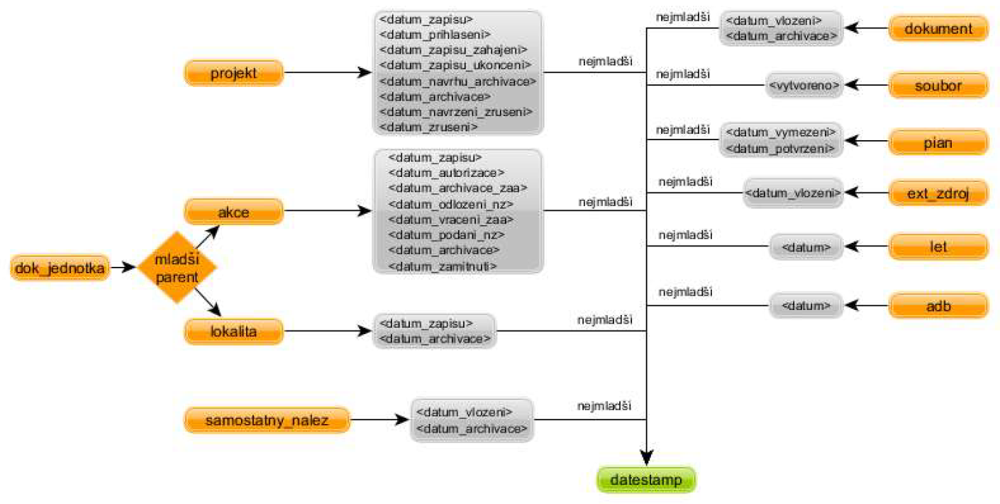

| setSpec | setName |
|---|---|
| projekt | Projekty / Projects |
| akce | Akce / Fieldwork Events |
| lokalita | Lokality / Sites |
| dok_jednotka | Dokumentační jednotky / Descriptive Units |
| adb | Archeologický dokumentační bod / Archaeological Documentation Point |
| dokument | Dokumenty / Documents |
| soubor | Soubory / Files |
| pian | PIAN / Spatial Units |
| ext_zdroj | Externí zdroje / External Sources |
| let | Lety / Flights |
| samostatny_nalez | Samostatné nálezy / Individual Finds |
19 OAI-PMH API
API v současné době nabízí službu AMCR Data Provider, která poskytuje metadatové záznamy z databáze AMČR, a to pomocí protokolu OpenArchives Initiative Protocol for Metadata Harvesting (OAI-PMH).
Naše implementace protokolu OAI-PMH podporuje reprezentaci metadat ve standardech:
- Dublin Core – poskytuje část datasetu týkající se dokumentů a jejich popisu;
CIDOC-CRM– nabízí archivovaná, volně přístupná data z AMČR ve formátu RDF v syntaxi odpovídající této ontologii;- AMČR XML – nativní formát, který umožňuje plné vytěžování databáze při zohlednění přístupových práv.
Uživatelé s vyšším oprávněním mohou využít své přihlašovací údaje do AMČR pro přístup k nearchivovaným či jinak chráněným záznamům. Aktualizace dat probíhá na denní bázi.
API najdete na adrese https://api.aiscr.cz.
Technické řešení

Architektura API se skládá z 5 komponent: AMCR Filter, RDF Converter, Scrub, AMCR Pass a AMCR Data Provider. Všechny komponenty jsou napsány v jazyce Java. Řešení používá open-source projekt X3ML Engine pro konverzi XML na RDF.


Řešení filtrace
Stav a přístupnost záznamu
Přístupnost záznam je ovlivněna jak procesními stavy daných metadatových záznamů, tak uživatelskou rolí.

Sety
Selektivní výběr je umožněn pomocí nadefinovaných setů, viz také Obr. 19.4.
Datestamps
Pro dotazy ListRecords a ListIdentifiers je umožněno filtrování na základě volitelného argumentu datestamp (from – od, until – do), kdy datestamp je vždy nejmladší z dostupných datumů.

datestamp pro jednotlivé záznamyAMČR nepodporuje evidenci smazaných záznamů. Po smazání záznamu z databáze proto dojde k odstranění záznamu z API bez náhrady ve formě hlavičky smazaného záznamu (status="deleted"). Některé operace se v AMČR se nemusí projevit změnou datestamp v API. Důvodem je způsob logování změn, který se váže pouze na specifické operace (změna stavu záznamu). Při využití API proto doporučujeme data pravidelně obnovovat, nebo umožnit uživateli vynucenou aktualizaci konkrétního záznamu. Podpora úplného sledování změn bude implementována v budoucích verzích API po provedení nutných úprav v databázi AMČR
Přihlášení
Pokud chcete pro stahování dat používat svůj účet AMČR, je nutné přihlášení pomocí Basic access authentication. Protokol https zajišťuje bezpečnou komunikaci. Způsob přihlášení se liší v každém nástroji, který je pro stahování dat používán. Níže jsou detailněji popsány způsoby přihlášení pro cURL a Postman.
cURL
cURL je nástroj skládající se ze softwarové knihovny (libcurl) a z nástroje příkazového řádku (curl) sloužících ke stahování souborů přes počítačovou síť. Nástroj je dostupný pro různé operační systémy Linux, macOS a Windows. Své uživatelské jméno a heslo je možné zadat pomocí přepínače -u.
curl -u username:password <GET request>Přihlašovací údaje je nutné posílat v každém requestu.
Postman
Postman je multiplatformní aplikace pro vývojáře sloužící k návrhu a interakci s HTTP API. Uživatelské jméno a heslo lze zadávat na kartě Autorizace. V rozevírací nabídce TYPE zvolte možnost Basic Auth a stiskněte tlačítko Odeslat. Přihlašovací údaje jsou poté posílány automaticky v každém requestu.
Verbs
Dotazování v protokolu OAI-PMH je možné pomocí tzv. sloves (verbs). Význam jednotlivých sloves s příkladem užití jsou popsány v následujících kapitolách. Podrobná specifikace protokolu OAI-PMH je k dispozici zde.
Identify
Sloveso Identify se používá k získání informací o úložišti.
ListMetadataFormats
Sloveso ListMetadataFormats se používá k načtení formátů metadat dostupných z úložiště.
Dotaz: https://api.aiscr.cz/dapro/oai?verb=ListMetadataFormats
Odpověď:
<OAI-PMH xsi:schemaLocation="http://www.openarchives.org/OAI/2.0/ http://www.openarchives.org/OAI/2.0/OAI-PMH.xsd">
<responseDate>2023-07-10T14:10:00Z</responseDate>
<request verb="ListMetadataFormats">https://api.aiscr.cz/dapro/oai</request>
<ListMetadataFormats>
<metadataFormat>
<metadataPrefix>oai_dc</metadataPrefix>
<schema>http://www.openarchives.org/OAI/2.0/oai_dc.xsd</schema>
<metadataNamespace>http://www.openarchives.org/OAI/2.0/oai_dc/</metadataNamespace>
</metadataFormat>
<metadataFormat>
<metadataPrefix>oai_rdf</metadataPrefix>
<schema>https://api.aiscr.cz/dapro/media/oai_rdf.xsd</schema>
<metadataNamespace>https://api.aiscr.cz/schema/oai_rdf/</metadataNamespace>
</metadataFormat>
<metadataFormat>
<metadataPrefix>oai_amcr</metadataPrefix>
<schema>https://api.aiscr.cz/dapro/media/oai_amcr.xsd</schema>
<metadataNamespace>https://api.aiscr.cz/schema/oai_amcr/</metadataNamespace>
</metadataFormat>
</ListMetadataFormats>
</OAI-PMH>Implementace OAI-PMH podporuje reprezentaci metadat v:
- Dublin Core –
metadataPrefixoai_dc, CIDOC-CRM –metadataPrefixoai_rdf,- interním AMČR XML –
metadataPrefixoai_amcr.
Jednotlivá schémata jsou k dispozici na: https://api.aiscr.cz/dapro/media/*.xsd.
ListIdentifiers
Sloveso ListIdentifiers se používá pro načtení záhlaví záznamů (header) z úložiště. Povinným argumentem je metadataPrefix. Nepovinné argumenty umožňují filtraci záhlaví na základě nastavených setů a/nebo datestamp. Uživatel dostane v odpovědi první stránku se záhlavím záznamů. Pro načtení dalších stránek je nutné použit resumptionToken.
Dotaz: https://api.aiscr.cz/dapro/oai?verb=ListIdentifiers&metadataPrefix=oai_amcr
ListRecords
Sloveso ListRecords se používá pro načtení záznamů z úložiště. Povinným argumentem je metadataPrefix. Nepovinné argumenty umožňují filtraci záznamů na základě nastavených setů a/nebo datestamp. Uživatel dostane v odpovědi první stránku se záznamy. Pro načtení dalších stránek je nutné použit resumptionToken.
Dotaz: https://api.aiscr.cz/dapro/oai?verb=ListRecords&metadataPrefix=oai_amcr
Odpověď:
<OAI-PMH xsi:schemaLocation="http://www.openarchives.org/OAI/2.0/ http://www.openarchives.org/OAI/2.0/OAI-PMH.xsd">
<responseDate>2023-07-11T07:21:17Z</responseDate>
<request verb="ListRecords" metadataPrefix="oai_amcr">https://api.aiscr.cz/dapro/oai</request>
<ListRecords>
<record>
<header>
<identifier>https://api.aiscr.cz/id/C-201773056</identifier>
<datestamp>2022-06-09</datestamp>
<setSpec>projekt</setSpec>
</header>
<metadata>
<oai_amcr:amcr xsi:schemaLocation="https://api.aiscr.cz/schema/oai_amcr https://api.aiscr.cz/dapro/media/oai_amcr.xsd">
<projekt>
<ident_cely>C-201773056</ident_cely>
<stav>6</stav>
<typ_projektu>záchranný</typ_projektu>
<datetime_born>2016-01-01 00:00:00</datetime_born>
<okres>PLZEŇ-SEVER</okres>
(...)
<termin_odevzdani_nz>2019-12-30</termin_odevzdani_nz>
<child_akce>C-201773056A</child_akce>
</projekt>
</oai_amcr:amcr>
</metadata>
</record>
<resumptionToken cursor="0" expirationDate="2023-07-12T22:30:00Z">2023-07-10.oai_amcr.1000.projekt.1000.1000...f</resumptionToken>
</ListRecords>
</OAI-PMH>GetRecord
Sloveso GetRecord se používá k získání individuálního záznamu metadat z úložiště. Požadované argumenty jsou metadataPrefix a identifikátor položky (identifier), ze které je záznam požadován. Položky jednotlivých setů nesou v hlavičce persistentní identifikátory, odvozované z pole ident_cely u jednotlivých záznamů nejvýše v XML struktuře záznamu v daném setu. Výjimkou je set soubor, kde jako identifikátor slouží pole filepath. K základnímu formátu identifikátoru je vždy jako prefix připojena URL: https://api.aiscr.cz/id/. Odkazy mezi záznamy napříč sety jsou řešeny na úrovni základního identifikátoru bez prefixu. Další informace ke struktuře identifikátorů a vazbám naleznete v samostatné kapitole.
Odpověď:
<OAI-PMH xsi:schemaLocation="http://www.openarchives.org/OAI/2.0/ http://www.openarchives.org/OAI/2.0/OAI-PMH.xsd">
<responseDate>2023-07-11T07:37:18Z</responseDate>
<request verb="GetRecord" metadataPrefix="oai_amcr" identifier="https://api.aiscr.cz/id/C-DL- 200400001">https://api.aiscr.cz/dapro/oai</request>
<GetRecord>
<record>
<header>
<identifier>https://api.aiscr.cz/id/C-DL-200400001</identifier>
<datestamp>2018-06-15</datestamp>
<setSpec>dokument</setSpec>
</header>
<metadata>
<oai_amcr:amcr xsi:schemaLocation="https://api.aiscr.cz/schema/oai_amcr https://api.aiscr.cz/dapro/media/oai_amcr.xsd">
<dokument>
<ident_cely>C-DL-200400001</ident_cely>
<let>C-LET-00253</let>
(...)
<jednotka_dokumentu>
<ident_cely>C-DL-200400001-D01</ident_cely>
(...)
<komponenta_dokument>
<ident_cely>C-DL-200400001-K01</ident_cely>
<parent>C-DL-200400001-D01</parent>
<obdobi>pr.zem</obdobi>
<areal>sídliště nesp.</areal>
<aktivita_sidlistni>1</aktivita_sidlistni>
<aktivita_pohrebni>0</aktivita_pohrebni>
(...)
<nalez_dokumentu>
(...)
</nalez_dokumentu>
</komponenta_dokument>
</jednotka_dokumentu>
</dokument>
</oai_amcr:amcr>
</metadata>
</record>
</GetRecord>
</OAI-PMH>ListSets
Sloveso ListSets se používá k načtení nastavené struktury úložiště, tzv. setů.
Parametry
Stránkování
Pomocí sloves uživatel získává první stránku požadovaných metadat. Pro získání dalších záznamů je nutné použit parametr resumptionToken, který uživatel dostal v odpovědi na svůj dotaz. Parametr resumptionToken je vždy na konci odpovědi. Počet záznamů na stránku je dán konfigurací na straně poskytovatele API.
Odpověď na dotaz v sekci ListRecords vrátila následující XML element obsahující resumptionToken, který je použit v dalším dotazu:
<resumptionToken cursor="0" expirationDate="2023-07-12T22:30:00Z">
2023-07-10.oai_amcr.1000.projekt.1000.1000...f
</resumptionToken>Parametr resumptionToken je v tomto případě společně se slovesy ListRecords a ListIndentifiers výhradním parametrem.
Filtrování
Tzv. selektivní sklizeň umožňuje uživatelům omezit požadavky na sběr dat na části metadat dostupných z úložiště. OAI-PMH podporuje selektivní sklizeň se dvěma typy kritérií pro sklizeň, která mohou být kombinována: datestamp a set. Data provider AMČR navíc uživatelům filtruje záznamy podle jejich přístupnosti.
Podle přístupnosti záznamu
Při zpracování dotazu jsou uživateli automaticky záznamy filtrovány podle přístupnosti, která je nadefinovaná v AMČR. Anonymní uživatel má vždy přístupnost pouze k archivovaným záznamům. Archeologové či uživatelé s vyšším oprávněním mají přístup i k nearchivovaným či jinak chráněným záznamům. Vice viz kapitoly k procesním stavům a uživatelským rolím.
Pomocí Setů
Protokol OAI-PMH umožňuje filtrování pomocí nadefinovaných setů, a to přidáním parametru set. Pomocí slovesa ListSets je možné získat hodnotu setSpec pro všechny nadefinované sety, viz také Obr. 19.4. Pro zvolené filtrování se poté do requestu se slovesy ListRecords nebo ListIndentifiers přidává parametr set=setSpec. Filtrování pomocí setů lze kombinovat s filtrováním pomocí datestamp.
Dotaz: https://api.aiscr.cz/dapro/oai?verb=ListRecords&set=akce&metadataPrefix=oai_amcr
Pomocí datestamp
Protokol OAI-PMH umožňuje filtrování pomocí datumu (datestamp), přiřazeného ke každému záznamu. Pro požadované filtrování se poté do requestu se slovesy ListRecords nebo ListIndentifiers přidává parametr from (od) a/nebo until (do).